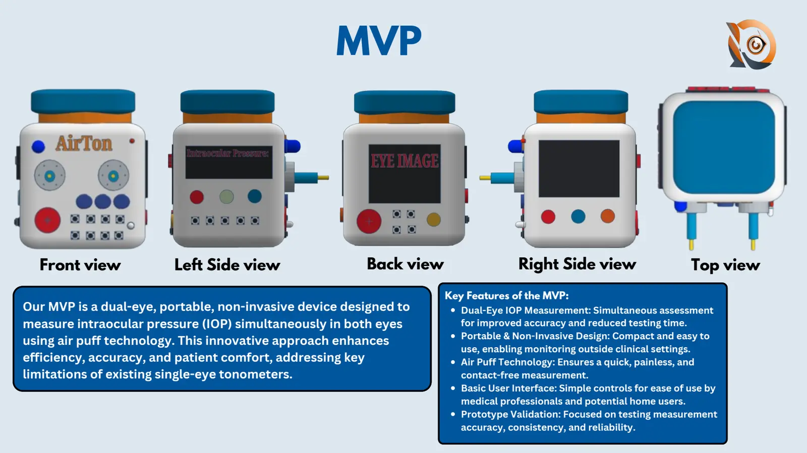
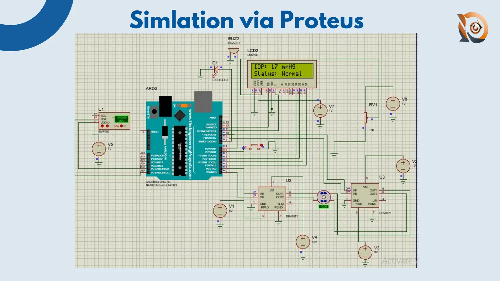
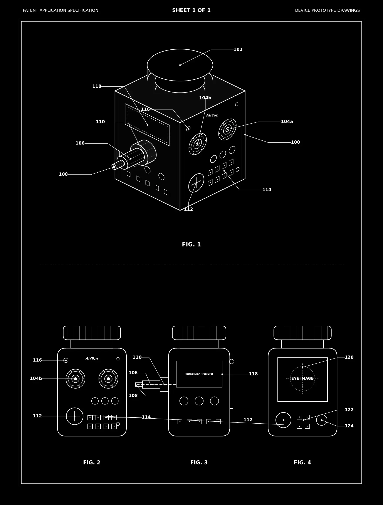

Home eye-pressure monitoring, under a doctor's care
AirTon
A gentle puff of air, two flashes of light and a pressure reading with its uncertainty. When the signal is not good enough, no reading at all.
Saravanan R K · Vasanth K · Aravindselvan CSri Sairam Engineering College, ChennaiRepository v0.3.0 · 23 Nov 2026
→ or click to begin · ? controls
The pressure you cannot feel
Glaucoma damages the optic nerve, often with no early symptoms. Doctors follow intraocular pressure (IOP) over months and years to manage it, so patients under care need it measured again and again.
Pressure alone cannot establish or exclude glaucoma.
US National Eye Institute (NEI), cited in the AirTon specification
So AirTon measures pressure. The clinician interprets it, alongside the patient's examinations and care plan.
Today, eye pressure is measured in the clinic
Contact
Goldmann applanation
The usual clinical reference. A probe touches the cornea, so it needs a trained professional and a clinic visit.
Non-contact
Clinic air-puff tonometer
≈ ₹3,00,000
Comfortable and fast, but priced and built for clinics. Figure from the SIH 2024 submission.
Correction from the claim audit
Rebound devices (e.g. iCare HOME)
Self-use exists, but a probe touches the cornea. The 2025 deck listed it as non-contact; the audit corrected that.
How often do you see an ophthalmologist for glaucoma check-ups?
Annually 44%Quarterly 36%Monthly 20%
Biggest challenge in managing glaucoma?
Frequent clinic visits 64%Monitoring at home 20%Cost 16%
Team concept survey reported in the July 2025 deck (21 interviews, Google Forms). Concept feedback, not a representative study.
From hackathon idea to engineered stack
Every point comes from a recovered, dated artifact, placed to scale in time. Plans that were never evidenced are left off.
Chosen by the founder · 4 October 2026
First product: home eye-pressure monitoring for patients already under a doctor's care.
No diagnosisNo disease exclusionNo medication changesNo autonomous triage
The patient follows a clinician-defined plan. The clinician reads the trend alongside examinations. Retinal image classification stays a separate research track with its own data, intended use and validation.
How a puff of air reads pressure
A 32 ms air pulse rises and falls against the cornea. Shown here slowed down about 140 times.
On the way in, the cornea flattens once. A flat surface reflects the light straight into the detector: a flash. The pressure at that instant is P1.
The cornea is viscous, so it lags behind the air. It flattens again on the way out, at a lower pressure: P2.
The midpoint ½(P1+P2) tracks IOP plus corneal resistance. The gap P1 − P2 is the hysteresis, which carries information about the cornea itself.
The applanation model, in five lines
PlenumAir pulseP(t) = A · exp(−½((t − t₀)/σ)²)A ≈ 72 mmHg, σ ≈ 4.5 ms, t₀ ≈ 16 ms
DeliveryAlignment lossPₑ = e·P, e = 1 − 0.032Δx² − 0.025|Δz|Clipped to 0.45–1. Lateral Δx and axial Δz offsets in mm.
CorneaViscous lagτ · dy/dt = Pₑ(t) − y(t)τ ≈ 0.55 ms (0.3–0.9), the corneal viscosity.
Flat whenThresholdy(t) = T = IOP + RcRc = 0.04(CCT − 545) + 1.2z, CCT in µm. Stiffness z correlates with τ, so hysteresis hints at Rc.
DetectorReflectiono(t) ∝ exp(−((y − T)/w)²)w = 3.5(1 + 0.35Δx) mmHg. Peaks exactly when the cornea is flat.
Simulator airton-synthetic-applanation-1, src/airton/ml/acquisition.py. Every parameter is a development assumption, not an AirTon measurement or calibration.
Fire the puff yourself
Passes the rules
P1P2½(P1+P2)P1 − P2SNRTrue T = IOP ± Rc——————
Simulator and deterministic rules re-implemented in the browser from src/airton/ml (synthetic development limits). The learned gates and estimators are not running here.
A safety-first architecture
July 2025 team deck, redrawn
Proposed target architecture
Linux, the phone UI, the cloud or model output can never bypass the controller.
The hardware record so far

July 2025 · team deck
Dual-eye 3D concept
Renders of a device measuring both eyes at once. No bilateral comparison was performed; one channel comes first.

July 2025 · Proteus simulation
Arduino UNO + BMP180
The BMP180 is a barometric sensor. The LCD's “17 mmHg, Normal” is an illustration, not a measurement.
August 2025 · pitch
≈ ₹7,000
Reported cost of an Arduino/ESP32 prototype. No itemised or as-built BOM was recovered.
Not recovered
Native CAD and STEP files
PCB and Proteus sources
Firmware
Raw bench recordings

September 2026 concept drawings
01
Two front eye-facing portsA dual-eye front face, as in the 2025 concept
02
Side nozzle projectionIts relation to the eye ports is not defined
03
Display reading “Intraocular Pressure:”With panel buttons and controls
04
Rear eye-image displayA crosshair alignment view
05
Top circular featureReference numerals 100 to 124 on the sheet
What the drawings do not show
No dimensions, tolerances, optical or air paths, battery placement or revision block. A patent-style sheet is not evidence of a filing.
A state machine that cannot fire
BOOT
SELF_TEST
ALIGN
READY
CAPTURE
QUALITY_CHECK
RECORD
IDLE
FAULT · latched
All four must be true before READY
self_test_ok
aligned
calibration_valid
independent_interlock_ok
Step 1 injects an interlock failure. The model drops to FAULT and stays there until a new boot.
# firmware/state_model.py (excerpt)def request_capture(self, conditions):
if self.state != State.READY or not conditions.ready():
self.state = State.FAULT
raise RuntimeError("Capture simulation blocked")
self.state = State.CAPTURE
return {"simulated": True, "hardware_enabled": False}
One home session, nine steps
1
Enrol
Clinic assigns the device, training record and care plan.
2
Confirm
Patient confirms identity and which eye.
3
Readiness
Calibration, battery, sensing, alignment, faults. Any failure blocks the puff.
4
Acquire
Stimulus and response under independent safety controls.
5
Judge quality
Accept, or reject with a reason and no value. Retries are bounded.
6
Queue
Durable local queue. Offline sessions stay visible.
7
Sync
IDs preserved; the server acknowledges durable receipt.
8
Review
Clinician reviews trends and failures. Amendments keep the original.
9
Follow the plan
New decisions remain with the treating clinician.
Saved on deviceCaptured and queued locally, even with no network.
DeliveredServer confirmed durable receipt. Failure never looks like success.
ReviewedA clinician has looked. Uploading is not the same as being seen.
A flat pressure channel used to crash feature extraction. It now returns no events, which the rules turn into signal_missing. A regression test covers it.
A wrong number is worse than no number
Layer 1
Deterministic rules
Untrusted clock, expired calibration, missing signal, lateral > 1 mm or axial > 1.5 mm, blink, saturation > 0.4%, SNR < 20.
Layer 2
Learned quality gate
LightGBM, threshold set for 95% artifact recall on calibration data.
Layer 3
Out-of-domain gate
Shrinkage Mahalanobis at the 0.995 calibration quantile, plus a 3 mmHg target-support guard.
Layer 4
Uncertainty gate
Withhold when the conformal half-width exceeds 5 mmHg.
Rejection reasons, held-out test · 900 acquisitions · one acquisition can carry several
0.0%
Artifact leakage: artifacts among accepted readings, test and external.
17.4%
Clean acquisitions also rejected. The price of caution, reported openly.
All gate settings are synthetic development values from ml/configs/iop-estimator.json. Approved values need bench evidence, risk analysis and clinical review (AT-022).
Physics first, learning second
Baseline
Physics ridge
Interpretable regression on P1, P2, hysteresis and alignment. It wins unless something richer beats it on subject-grouped validation.
Residual
LightGBM
Predicts only the residual over the ridge, so trees never have to extrapolate across the pressure range.
Residual · selected
1D-ResNet deep ensemble
Five members, heteroscedastic β-NLL (β = 0.5). The output layer starts at zero, so training begins exactly at the physics baseline.
2 × 320pressure/80 + optical
Conv k716 ch
ResBlock32 ch · /2
ResBlock64 ch · /2
ResBlock64 ch · /2
Pool ⊕ scalarsDense 64
μ, log σ²residual, variance
Validation RMSE, mmHg (subject-grouped)
Richer models gain 0.03 mmHg. The remaining error comes from what the signals do not carry, chiefly corneal thickness. Expect real gains from better signals and covariates, not bigger models.
Gating matters more than model size
Ungated · every detectable acquisition
7.25
RMSE, mmHg. Limits of agreement −12.54 to +15.37.
Gated · held-out test
1.84
RMSE, mmHg. Four times smaller, same model.
Gated · unseen device lot
2.07
The system abstains more instead of reporting worse values.
Every reading carries its uncertainty
Illustration at the held-out test set's mean interval width, 7.36 mmHg.
Target coverage 90%
92.9%
Held-out test. External device lot: 93.5%.
Method
Normalized split conformal. Calibrated on 75 subjects with one acquisition each, so the exchangeability unit matches the clustering unit.
Limit
Coverage is marginal, not conditional. In the external thin-cornea subgroup it fell to 85.4%.
Held-out synthetic results
SYNTHETICEvery number below comes from simulated acquisitions with assumed physics. None describes AirTon hardware, a patient or clinical accuracy.
Model demo-iop-7d8b9861815b
Test
External device lot
Acquisitions · subjects
900 · 75
1,200 · 100
Accepted
67.4%
46.3%
Session yield (≥ 1 accepted reading)
95.7%
79.0%
Artifact leakage
0.0%
0.0%
Bias · clustered 95% limits (mmHg)
−0.02 · −3.64 to 3.60
0.09 · −3.98 to 4.16
RMSE (95% CI)
1.84 (1.67–1.99)
2.07 (1.82–2.35)
90% interval coverage
92.9%
93.5%
Repeatability coefficient
2.38
2.18
Under a device-lot shift
67.4%→46.3%
Acceptance falls sharply…
1.84→2.07
…while RMSE barely moves. The stack abstains more instead of reporting worse values.
Subject-grouped partitions: train 275 · validation 75 · calibration 75 · test 75 · external 100. Full profile reproduces this model ID exactly on rerun.
The bias the home device cannot see
Central corneal thickness is not observable from the home signals. Thin corneas read low, thick corneas read high, as in other non-contact tonometers.
Open decision · AT-023
May a clinician-entered corneal thickness be used as an estimator covariate? That needs ophthalmology, regulatory and data-entry hazard review.
Hazard H20 in the risk register. Subgroups use synthetic truth covariates.
A model you can verify byte for byte
bundle.jsonmanifest · per-file SHA-256
trees · flat JSONLightGBM exported
cnn · NPZbatch-norm folded
↓ content hash ↓
demo-iop-7d8b9861815b
numpy and scipy only at inference
Pickle never written or read
Refuses tampering, extra files and non-synthetic bundles
Train/serve parity: 0.0 mmHg
Accepted recordpass
Rejected recordreject
Same ID, same bytesAcknowledged as a duplicate.
Same ID, changed contentConflict. Amendments become separate audited events.
RejectedReasons required, estimate must be null.
Records from artifacts/examples/synthetic-measurements.json, hashes shortened for display. The strict contract accepts exactly these 16 fields.
From the eye to the doctor, without losing a reading
Capture
ID, eye and time assigned at capture, with clock trust.
Readings with device, calibration and model identity.
Clinician review
Acknowledge, or amend with author, time and reason.
Built today
Loopback ingestion, SQLite store, static HTML review report and FHIR-shaped JSON, all synthetic. React dashboards for patient, doctor and admin run on mock data.
FHIR R4 mapping
Observation per eye, laterality in bodySite, UCUM units
Rejected → dataAbsentReason, no value
Device, DiagnosticReport, Provenance
Still to build
Production encrypted outbox, device identity, care-team authorization, durable delivery and review states. No cloud is configured.
Retinal research is a separate track, audited
Nov 2024 – Apr 2025
Early Keras CNN
256 px fundus images; logs record 455 training and 64 validation images; last validation accuracy 0.7656.
Apr – May 2025
ORIGA experiments
650 images (482 normal, 168 glaucoma) balanced to 336, split 252 / 84. The same 84 chose checkpoints and compared models. VGG19 and ResNet18 both scored 62/84 = 73.81%.
VGG19 · rows actual · columns predicted
GlaucomaNormal
39TN
9FP
NormalGlaucoma
13FN
23TP
GlaucomaNormal
NormalGlaucoma
Axis labels were reversed
VGG19Sensitivity63.9%Specificity81.3%
ResNet18Sensitivity75.0%Specificity72.9%
13 defects found, including test-set reuse, no patient grouping and sigmoid outputs fed to cross-entropy. The corrected framework uses patient-grouped splits, one logit, validation-only selection, temperature scaling and a frozen threshold.
Audit calculations from archived plots, not reruns. Fundus classifiers do not calibrate a tonometer.
Tested, reproduced, hashed
$python -m unittest discover -s tests -v
✓ 48 tests passed · 17 existing + 31 new
$python scripts/train_iop_model.py --profile full
✓ ~4.5 min CPU · demo-iop-7d8b9861815b reproduced exactly
$python -m airton.cli iop-demo
✓ 22 of 36 new synthetic acquisitions accepted, contract-valid
✓ byte-identical to the archived synthetic examples
48
Tests: physics sanity, tree and CNN parity, conformal, clustered limits, tamper refusal, governance
80
Recovered artifact hashes recorded and checked
242
Files reviewed for tokens, private paths and notebook outputs
0.0
mmHg train/serve parity between training and the portable runtime
docs/software/verification.md, 23 Nov 2026, Windows 11 · Python 3.12.10. Verifies software behaviour, not a device or clinical performance. CI changes were not yet run remotely.
SuppliedDecks, notebooks, six apps, web app, drawings
Product origin
supplied
SIH 2024 concept, problem 1550
Hardware
supplied
Concept renders and drawings; no native CAD, PCB or bench data
ML engineering
synthetic
IOP stack and retinal framework verified on synthetic data
Early ML
supplied
Notebook logs; provenance and valid evaluation missing
Web product
supplied
React dashboards; mock login, readings and figures
IoT and cloud
supplied
App prototypes; production security and delivery open
IP
proposed
Drafting guide and drawing; no filing verified
Clinical
none
Study and home-use plans written; no results
No single percent-complete. Design, metrology, clinical, manufacturing and commercial readiness each have their own gate.
Twenty hazards, tracked from day one
H01Unintended or excessive stimulus
H02Unsafe optical exposure
H03Bad calibration or missed event
H04Treating IOP as a diagnosis
H05Wrong patient or wrong eye
H06Blink or misalignment forced into a value
H07Lost report or unreviewed alert
H08Leaked health data
H09Domain shift or subgroup error
H10Unsafe update or stale version
H11Battery, power or thermal fault
H12Infection or poor cleaning
H13Clock error or replayed payload
H14Lay-user misunderstanding
H15Repeated attempts after failures
H16Upload taken as a doctor's response
H17Shared, drifted or returned device
H18Synthetic results mistaken for real
H19Over-trust in intervals
H20Corneal-thickness bias
Open · 10Software controls on synthetic data · 7Demo-level controls · 3
Candidate references, applicability not yet assessed
CDSCOTonometer listed as Class B · Medical Devices Rules 2017
ISO 8612Tonometer performance, with ISO 15004-1
ISO 15004-2Light hazard for eye-directed light (2024)
IEC 62304Medical device software lifecycle
ISO 14971 · 13485Risk management · quality system
IEC 60601-1 safety · -1-2 EMC · -1-11 home use
IEC 62366-1Usability engineering
DPDPIndia's digital personal data law
Catalogue scope review only. No compliance is claimed.
What early respondents told us
21interviewed
Is this a problem worth solving?
47.6% Yes
38.1% Maybe
14.3% No
25validated MVP
Satisfied with the 3D model?
48% Satisfied
36% Needs improvement
16% Not satisfied
Ease of use is critical. People liked the non-invasive idea; unclear operation would stop them.
The air puff worries people. 66.7% named the air-puff mechanism as the one thing to improve.
Data matters. Data tracking and smartphone integration were the most requested features.
Variability was noticed. Respondents asked for calibration and guidance on usage conditions.
July 2025 team deck, pages 6 and 24–25 (Google Forms). Concept and usability feedback on a 3D model, not home-use outcomes or representative demand.
Unit economics, re-derived
₹35,000
Planned unit price, with ₹25,000 cost: ₹10,000 contribution, 28.57%.
126
Units a year to cover ₹12.59 lakh of fixed costs. Arithmetic only.
₹25k / ₹40k
Basic and advanced price proposals in the 2025 deck.
₹3 lakh
Clinic air-puff tonometer, per the SIH 2024 submission.
Two pathways to compare: device purchase and clinic-managed rental, which adds cleaning, calibration and turnaround costs.
Historical planning assumptions (June 2025 workbook, July 2025 deck), not supplier quotes or validated forecasts. Excludes yield, calibration labour, service and regulatory costs.
Every stage is a gate, not a date
0Weeks 1–2
Reconcile baseline
Native files, clinician-reviewed home scope, ownership and roles.
1Weeks 2–6
Observe the signal
Compare reflection, imaging and interference on shared fixtures. Go or no-go.
2Weeks 6–12, if feasible
Bench prototype
One channel, independent controls, raw acquisition, calibration record.
3After safety gate
Study preparation
Protocol, statistics, consent and data plan, permissions.
4Approval-dependent
Paired data & usability
Agreement, repeatability and home critical tasks.
5Workflow gates
Connected pathway
Enrolment, care plan, encrypted delivery, assigned review.
6Separate claims
Bilateral or retinal
Only with evidence for the added intended use.
7Regulatory-dependent
Release & surveillance
Authorization, labelling, service and change control.
P0 backlogAT-021 Fit the simulator to bench dataAT-003 Optical observableAT-004 Safety controlsAT-005 Timing & referenceAT-002 Clinical scope review
What unlocks the next gate
Optics & biomedical review
Approve the signal definition, timing budget and light-hazard approach.
AT-003 · AT-004
A model-eye bench
Traceable reference pressure, synchronized raw recordings and every failure kept.
AT-005 · AT-007 · AT-021
An ophthalmology partner
Review home scope, eligibility, abstention settings and the corneal-thickness question.
AT-002 · AT-022 · AT-023
Quotes & a cost model
Dated supplier quotes and a recurring cost, yield and service model.
AT-006 · AT-019
The software can already take real bench data without redesign. What it needs now is a real signal.
A wrong number is worse than no number.
Thank you.Questions are welcome.
Team AirTon · Saravanan R K · Vasanth K · Aravindselvan CGuided by Dr. J. Thamil Selvi, Head of the Department of ECE, Sri Sairam Engineering College, ChennaiSources: AirTon repository v0.3.0 (specification, verification record, model card, audits). Synthetic results are engineering artifacts, not clinical evidence.
AirTon
Evidence
Supplied
Proposed
Synthetic
Bench
Clinical
Released
Home IOP monitoring under a doctor's care01 / 32
All slides · click one to jump
Next→ · space · clickBack← · click the left edgeAll slidesOSpeaker notesNPlay by itselfASound on or offMFull screenFBlack screen. or BFirst · lastHome · End